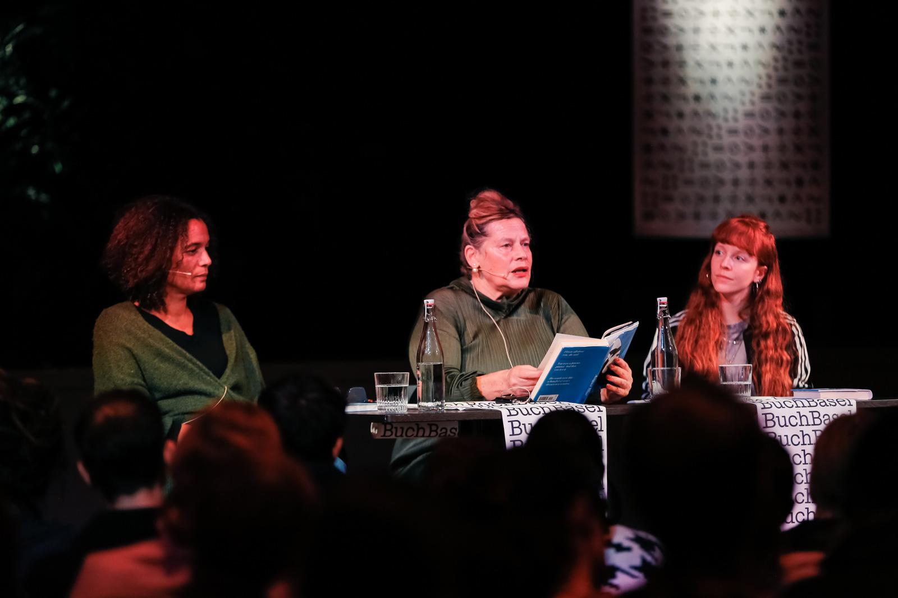
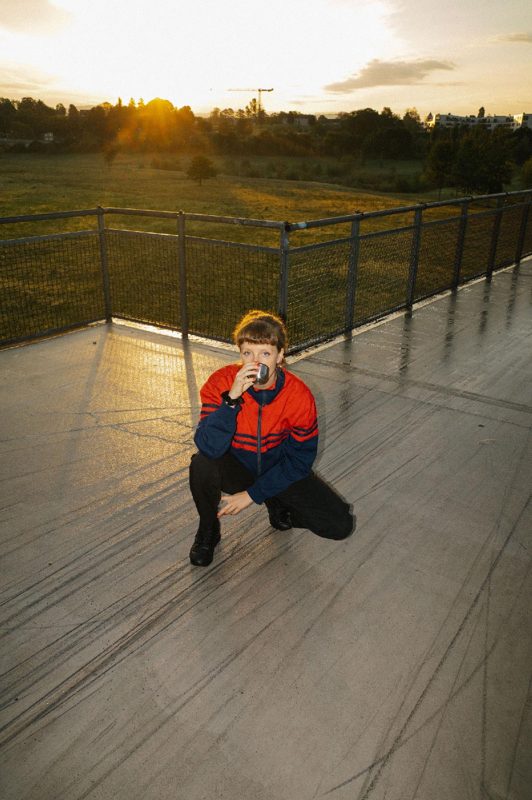

Ich denk, ich denk zu viel
Kein & Aber
Hardcover, 2021, 208 Seiten
ISBN 978-3-0369-5843-9
Softcover, 2024, 192 Seiten
ISBN 978-3-0369-6184-2
Im Buchhandel erhältlich ab dem 16. März 2021.
Zürich: Bestellen bei Paranoia City
Zürich: Bestellen bei Volkshaus Buch
Berlin: Bestellen bei She Said
DE: Bestellen bei genialokal.de
Texte für das ZEITmagazin
Kolumnen und Essays für Das Magazin (bis 2020)
Kolumnen für Das Magazin (ab 2020)
24.6.2024, Auftritt, SRF-Literaturclub srf.ch
18.6.2024, Sternstunde Philosophie (SRF) srf.ch
25.3.2024, SRF-Literaturclub srf.ch
26.1.2024, Philosophie Festival Zürich
Januar 2023 Jury-Mitglied, Prix de Soleure, Solothurner Filmtage
8.11.2022, SRF-Literaturclub srf.ch
17.9.2024, Michelle Steinbeck, «Favorita», Literaturhaus Basel
27.8.2024, Deborah Levy, «Die Position der Löffel», Kaufleuten Zürich
25.5.2024, Chantal-Fleur Sandjon, «Die Sonne, so strahlend und Schwarz», Schauspielhaus Zürich
2.2.2024, Henri Maximilian Jakobs, «Paradiesische Zustände», Schauspielhaus Zürich
Dezember 2023, Lesereise mit Luisa Neubauer, «Gegen die Ohnmacht», Pfefferberg Theater Berlin, Waschhaus Potsdam, Gebläsehalle Duisburg, Gloria Köln, Markthalle Hamburg
18.11.2023, Deborah Levy, «Augustblau», Buch Basel
5.9.2023, Dana Vowinckel, «Gewässer im Ziplock», Literaturhaus Berlin
16.9.2023, Necati Öziri, «Vatermal», Schauspielhaus Zürich
27.2.2023, Simon Fröhling, «Dürrst», Schauspielhaus Zürich
17.1.2023, Theresia Enzensberger, «Auf See», Schauspielhaus Zürich
1.12.2022, Hengameh Yaghoobifarah, «Das Ministerium der Träume», Schauspielhaus Zürich
1.11.2022, Sharon Dodua Otoo, «Adas Raum», Schauspielhaus Zürich
27.10.2022, Calla Henkel, «Other People’s Clothes», Zürich liest

13.7.2021, Kaufleuten, Literaturfestival Zürich (CH)
3.8.2021, Pfefferberg Theater, Berlin (DE)
17.9.2021, Lit Festival, Duisburg (DE)
26.9.2021, Buchladen, Frauenfeld (CH)
14.10.2021, House of Switzerland, Stuttgart (DE)
27.10.2021, Orell Füssli, Basel (CH)
6.11.2021, Bücher Stierle, Salzburg (AT)
7.11.2021, Zollhaus, Zürich (CH)
30.11.2021, Orell Füssli, Winterthur (CH)
23.3.2022, Zentralbibliothek Zürich (CH)
14.5.2022, Campusfestival, Konstanz (DE)
31.5.2022, Stadtbibliothek, Baden (CH)
2.6.2022, Theater am Gleis, Winterthur (CH)
25.6.2022, Zeughaus Kultur, Brig (CH)
29.10.2022, Festival Zürich liest (CH)
30.11.2022, Theater Chur, Chur (CH)
26.1.2023, House of Communication, München (DE)
4.8.23, Appletree Garden Festival, Diepholz (DE)
17.9.23, Kleintheater Luzern, Luzern (CH)
Nina Kunz wurde 1993 geboren, studierte Sozial- und Wirtschaftsgeschichte in Zürich und arbeitet seit 2017 als Kolumnistin und Journalistin für Das Magazin. Ihre Texte erschienen bereits in der Neuen Zürcher Zeitung, der ZEIT und dem ZEITmagazin. 2018 sowie 2020 wurde sie zur Kolumnistin des Jahres gewählt. Seit 2024 ist sie festes Mitglied der Kritik:erinnenrunde des Literaturclubs im SRF.
